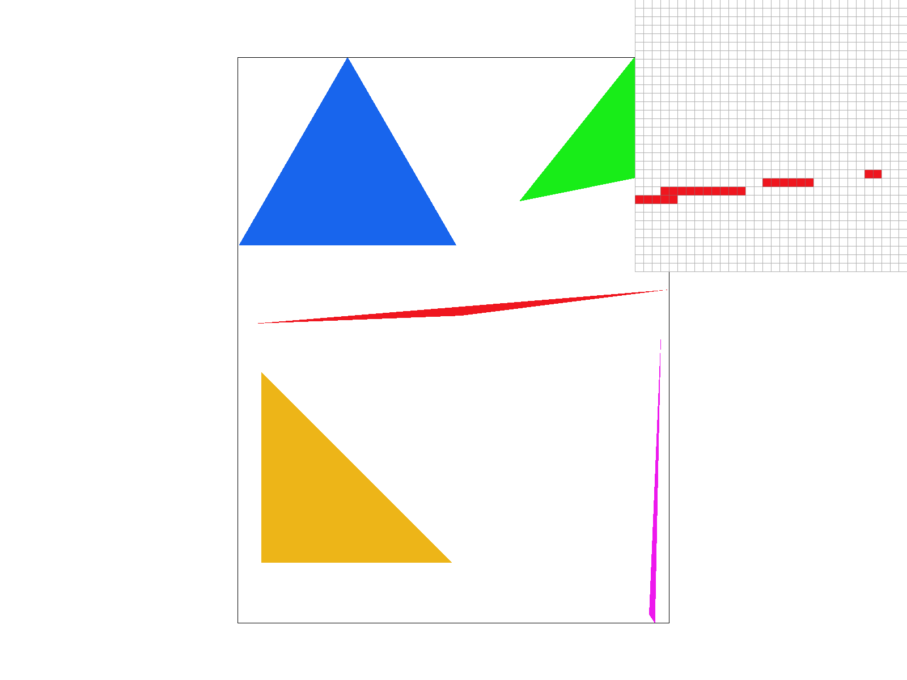

Overview
In this project, my partner Aidan and I implemented a pipeline for rendering computer images, ranging from rudimentary triangles to detailed textures.
This included implementing sampling and anti-aliasing techniques discussed in class. This was really interesting! First, because so many of the things that
we take for granted in looking at graphics (e.g., smooth edges, textures of varying level of detail), carry complicated implementation details. Furthermore,
as a math person, it was really interesting to see the way techniques like linear transformation or change of basis can transform images and help us sample textures.
One of the most interesting components of the project was the use of Barycentric coordinates. It was really interesting to see that they were unchanged between
screen space and texture space!
Section I: Rasterization
Part 1: Rasterizing single-color triangles
To rasterize triangles, our algorithm looks at the bounding box surrounding the triangle (determined by the maximum and minimum x and y coordinates), checking each point in the bounding box.
The algorithm computes the dot product between the 'normal line' corresponding to each edge of the triangle (orthonal to each edge) and a desired point. For each of the normal lines
corresponding to the three edges of the triangle, if the sign of the dot product is the same for each edge, the point is determined to be in the triangle. Then we render it!
We ran into trouble understanding the difference between a clockwise and counterclockwise orientation of edges. We tried checking this manually, but came across the remarkable fact that each dot product will only
be positive iff the orientation is counterclockwise and negative iff the orientation is clockwise! This greatly simplified our code.
Our algorithm is no worse than one that checks every point in the bounding box because that is our exact algorithm.
|

Example of basic triangle rasterizing.
|
Part 2: Antialiasing triangles
In the prior rasterization algorithm, each point from the sample buffer was rendered directly to the framebuffer. In our supersampling algorithm, this is
no longer the case: our biggest change was creating a larger sample buffer, of size determined by the screen height, width, and sample rate, a new quantity
describing how many pixels we sample in order to render one pixel on the screen.
Now, when we resolve our sample buffer to the framebuffer, we iterate across the height and width in steps of size sqrt(sample_rate), and for each block, average the
intensity of the colors in each pixel in the larger sample buffer. In the original rasterizer, jaggies would emerge because pixels on the edge of a triangle would be
sampled at full intensity next to pixels outside of the triangle which would not be rendered. Through supersampling, the intensity of these border pixels varies (not all
of the averaged pixels are in the triangle), so the edges appear much smoother.
|
Supersampling Rate of 1 Pixel
|
Supersampling Rate of 4 Pixels
|
|
Supersampling Rate of 9 Pixels
|
Supersampling Rate of 16 Pixels
|
Part 3: Transforms
Cubeman is lifting weights.
Section II: Sampling
Part 4: Barycentric coordinates
Barycentric coordinates can be thought of another way of localizing pixels. Instead of cartesian coordinates which are charted at fixed intervals relative to the origin,
Barycentric coordinates are charted within a triangle with respect to the distance said point lies from each vertex. Instead of an (x, y) coordinate, barycentric coordinates
are given as triples of (alpha, beta, gamma), where each coordinate reflects the proportion at which a point lies along the line connecting a vertex to an opposite edge.
Visual Aid for Barycentric Coordinates.
Color Gradient.
Part 5: "Pixel sampling" for texture mapping
Pixel sampling is the method by which the pixels displayed in a frame are selected or generated from a texture map. Two examples are nearest-neighbor and bilinear sampling. In both methods,
we use barycentric coordinates to translate a pixel in screen space to texture space. In nearest-neighbor sampling, we select the cloest pixel in texture space to display at the given
location in screen space. In bilinear sampling, the determine the cloest four pixels, and average them with weights corresponding to the relative distance from the translated point to each
sample point of interest.
|
Nearest pixel sampling, 1 pixel / sample
|
Bilinear pixel sampling, 1 pixel / sample
|
|
Nearest pixel sampling, 16 pixel / sample
|
Bilinear pixel sampling, 16 pixel / sample
|
Part 6: "Level sampling" with mipmaps for texture mapping
Level sampling refers to a technique by which detailed textures are sampled at various 'levels' of detail to preserve speed and reduce some of the artifacts that arise from
sampling points far off in the distance with a high degree of detail. To implement this, we calculated the distances between adjacent screen-space points when translated to texture space
and used this number (`L`) to compute the texture level (`D`) as done in lecture. We implemented nearest level sampling, in which the closest integer to D was used, or linear level sampling,
in which D and D+1 were averaged according to the distance between L and each integer.
As it pertains to memory, supersampling takes up a lot of memory because we need to allocate the size of the screen * sampling rate pixels in the buffer. Nearest-neighbor approaches to
pixel and level sampling are fast, as they require a quick translation and lookup, but linear sampling, which achieves a nicer image, is slower because it requires additional steps to
compute nearby pixels and averages.
|
Nearest pixel sampling, Level 0
|
Nearest pixel sampling, Nearest Level Sampling
|
|
Bilinear pixel sampling, Level 0 Sampling
|
Bilinear pixel sampling, Nearest Level Sampling
|
Section III: Art Competition
If you are not participating in the optional art competition, don't worry about this section!
Part 7: Draw something interesting!